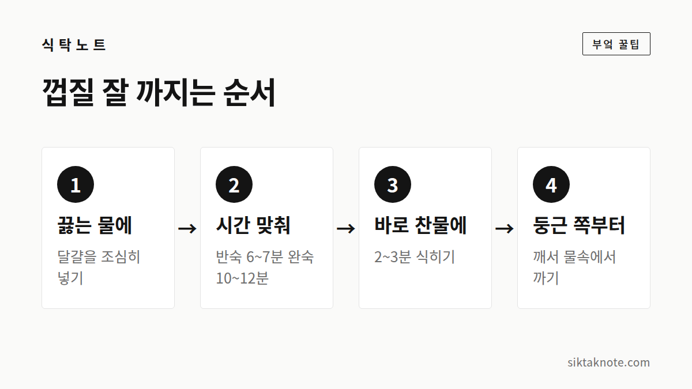
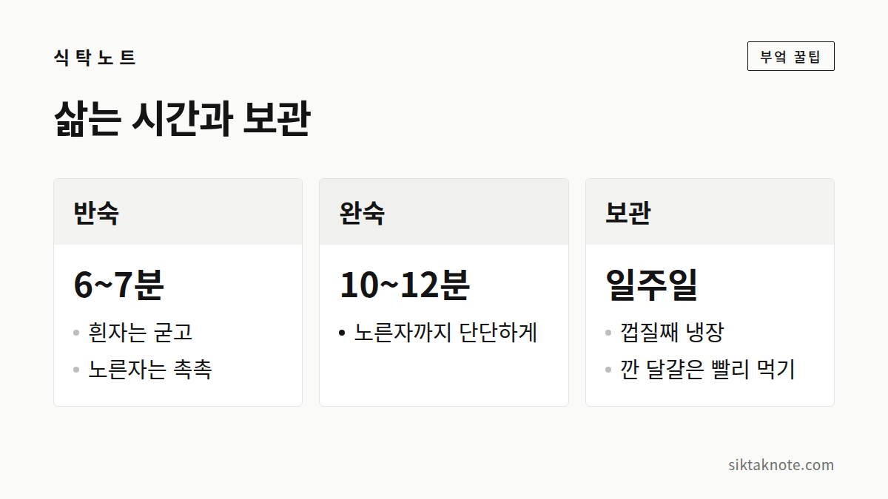

삶은 달걀 껍질 잘 까지는 법 — 삶는 시간과 식히는 요령

3줄 요약
- 끓는 물에 달걀을 넣어 삶고, 다 삶으면 바로 찬물에 식히세요.
- 반숙은 6~7분, 완숙은 10~12분이 기준입니다.
- 둥근 쪽부터 깨서 물속에서 까면 껍질이 깔끔하게 벗겨져요.

어떻게 해야 할까요
- 냄비에 물을 끓이고, 냉장고에서 꺼낸 달걀을 국자에 올려 조심히 넣어요. 달걀이 잠길 정도의 물이면 됩니다.
- 처음 1~2분은 젓가락으로 살살 굴려주면 노른자가 가운데 자리를 잡아 단면이 예쁘게 나와요.
- 반숙은 6~7분, 완숙은 10~12분 삶아요. 달걀 크기와 불 세기에 따라 조금씩 달라질 수 있어요.
- 시간이 되면 바로 건져 찬물에 담그세요. 얼음물이면 더 좋고, 2~3분 식힙니다.
- 달걀 둥근 쪽(공기가 들어 있어 살짝 비어 있는 쪽)을 톡 깨고, 바닥에 살살 굴려 전체에 금을 낸 다음 물속이나 흐르는 물에서 까요.

왜 그런지
삶은 직후 갑자기 식히면 달걀 속 내용물이 수축하면서 껍질 안쪽 얇은 막과 흰자 사이가 살짝 벌어져요. 그래서 막이 흰자에 붙지 않고 껍질과 함께 벗겨지기 쉬워요.
또 갓 낳은 신선한 달걀일수록 막이 흰자에 단단히 붙어 껍질이 잘 안 까져요. 산란한 지 며칠 지난 달걀이 오히려 삶기에는 좋다고 알려져 있어요.
이런 점도 알아두세요
- 소금이나 식초: 물에 소금 1작은술 정도를 넣으면, 삶다가 껍질에 금이 가도 흰자가 밖으로 덜 새어 나와요.
- 노른자 가장자리가 초록빛: 너무 오래 삶았거나 천천히 식혔을 때 생기는 현상이에요. 맛과 식감은 떨어지지만 먹어도 괜찮아요.
- 냉장 보관: 껍질째 냉장하면 일주일 안에 드세요. 껍질을 깐 달걀은 밀폐해서 하루 이틀 안에 먹는 게 좋아요.
- 실온 보관: 삶은 달걀은 오래 실온에 두지 마세요. 도시락이나 소풍에 가져갈 때는 보냉 가방을 쓰는 게 안전해요.
"끓는 물에 넣고, 시간 맞추고, 바로 찬물." 이 세 가지만 지키면 껍질이 훨씬 잘 벗겨져요.